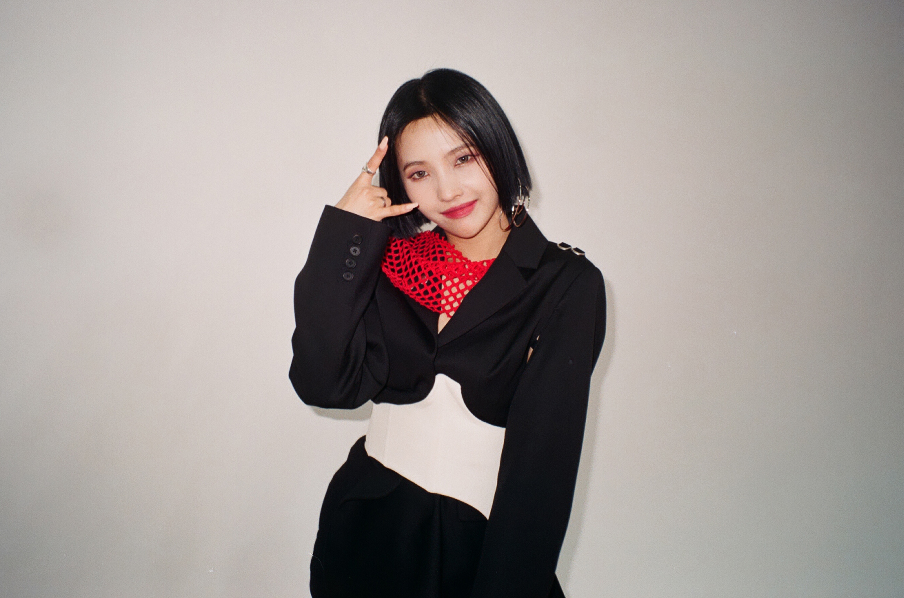

(G)I-DLE's Members

Leader Of The Group, Main Rapper,
Sub Vocalist
- Jeon Soyeon, more commonly known as Soyeon, was born on 26 August 1998.
- Her nationality is Korean.
- She took part in survival shows such as Produce 101 and Unpretty Rapstar, but never emerged champion.
- Before debuting with (G)I-DLE, she was a solo artist and debuted with her single "Jelly" which was composed and written by herself.
- She also writes and composes most of their group's songs.
- Her favorite colour is yellow and she loves mint chocolate.
Main Vocalist
- Minnie Nicha Yontararak, more commonly known as Minnie, was born on 23 October 1997.
- Her nationality is Thai.
- She is multilingual, she is proficient in English, Korean and Thai.
- She is left handed.
- She wrote some of her group's side tracks, such as 'Blow Your Mind'.
- She is friends with CLC’s Sorn and with BlackPink’s Lisa who are also Thai.
- Her favorite colour is pink.
- Here is her introduction speech in Thai:
Sub Vocalist, Visual, Maknae
- Yeh Shuhua, more commonly known as Shuhua, was born on 6 January 2000.
- Her nationality is Taiwanese.
- She can speak Chinese proficiently but her Korean skills can still be improved.
- She likes to act.
- She is the maknae(youngest member) of the group.
- She hates strawberry and likes chocolate.
Lead Dancer, Sub Vocalist, Sub Rapper, Face of the Group
- Song Yuqi, more commonly known as Yuqi, was born on 23 September 1999.
- Her nationality is Chinese.
- She is multilingual like Minnie, she can speak Chinese, Korean and English proficiently.
- Her favourite animal is a giraffe.
- She is famous in both Korea and China due to her participation in the Chinese variety show "Running Man".
- She can play the Chinese orchestral instrument guzheng.
- Here is her introduction speech in Chinese:
Main Vocalist, Visual
- Cho Miyeon, more commonly known as Miyeon, was born on 31 January 1997.
- Her nationality is Korean.
- She was training to debut with BlackPink before she joined (G)I-DLE due to some issues.
- She is left-handed like Minnie.
- She knows how to play the violin and piano.
- She is also the 'power vocal' of her group as she has amazing singing techniques and can reach high notes with ease.
Main Dancer, Sub Vocalist, Sub Rapper
- Seo Soojin, more commonly known as Soojin, was born on 9 March 1998.
- Her nationality is Korean.
- She took Jazz dance classes and knows taekwando.
- She debuted with girl group VIVIDIVA but it was disbanded in 2016, 1 year after it was formed. Afterwards, she joined (G)I-DLE.
- She is the shyest member in the group.
- She is known as the best dancer of their group.
- Here is her introduction speech in Korean: